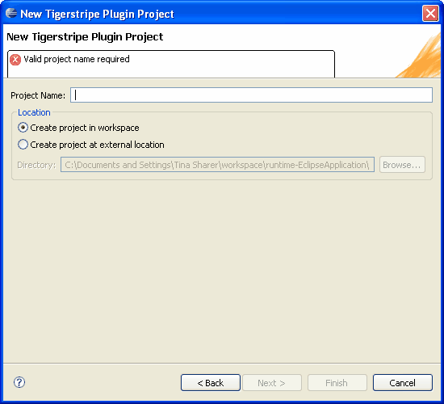

Tigerstripe Plug-in projects contain the details of a Generation plug-in. More specifically, they contain the following:
The first step in creating a Generation plug-in is to create a Plug-in project.
You can create a new Plug-in Project through the New Tigerstripe Plug-in Project wizard. Complete the following procedure to open the Wizard.
To open the New Plug-in Project Wizard
- In Tigerstripe Workbench, select File, click New, and select Other.
- Navigate to the Tigerstripe option, select Tigerstripe Plugin Project, and click Next. The New Plugin Project wizard opens.
The following image is a example of the New Tigerstripe Project wizard:

You must provide the following information to successfully create a new Plug-in Project:
- A valid Project Name: Your project name may not include special characters and may not be used in another Eclipse Workspace. The New Tigerstripe Plug-in Project wizard will not accept an invalid name entry.
The corresponding newly created plug-in project will appear in the Tigerstripe Explorer, and the Plug-in Project Descriptor will automatically open in the main editor.
By default, your plug-in project is created within the same directory previously identified as the location of the workspace by Eclipse. The name of your project will be used as the target directory within your workspace directory.
Alternatively, you can create your project outside of the current workspace, at any arbitrary location by selecting the Create project at external location option on the New Tigerstripe Plugin Project wizard. You must provide a valid absolute path to the directory to where your new project is created.
© copyright 2005, 2006, 2007 Cisco Systems, Inc. - All rights reservedUpon successful creation of a Plug-in Project, the Plug-in Project Descriptor is automatically opened in the main editor. The following lists additional information that you can provide in the Project Descriptor:
- Project Name: This is the full name of your current project. As opposed to the name used to identify the project within Eclipse, the full name can contain any character.
- Project Version: Contains the version number for your project. The name and version will appear in the Generation section of any Tigerstripe Descriptor for any project in your workspace where you Deploy your plug-in.
- Project Description: Allows you to add detailed information about your project.
You can edit more information in the Plug-in Project Descriptor. Refer to the following sections for more details:
Once you configure your plug-in, you will need to test and deploy that plug-in for use with your Tigerstripe Projects. Rrefer to the following sections for more details: